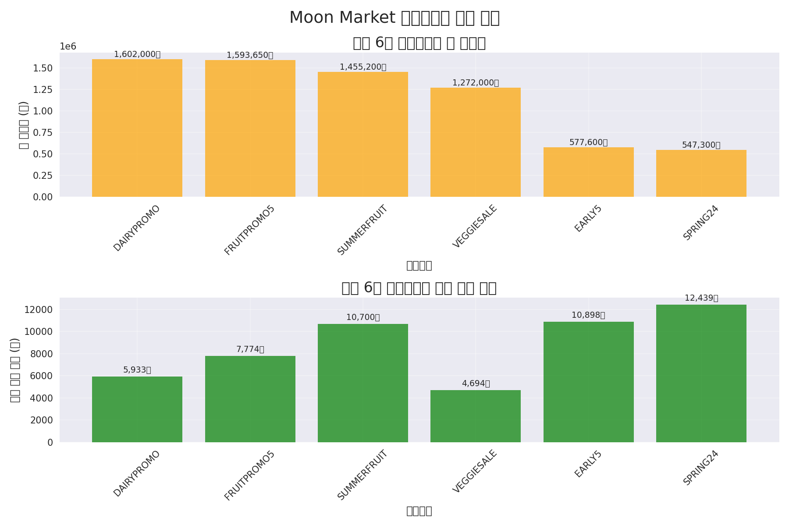

아마존 신선식품 판매 데이터 분석 및 마케팅 인사이트 도출
Executive Summary
본 분석은 아마존 신선식품(과일, 채소, 유제품) 판매 데이터를 기반으로 구매 패턴, 고객 세그먼테이션, 마케팅 프로모션 효과를 종합적으로 분석하여 마케팅 인사이트를 도출하는 것을 목적으로 합니다. 총 1,220건의 주문 데이터를 분석한 결과, 고객 세그먼트별 선호도, 카테고리별 성과, 프로모션 효과성에 뚜렷한 차이가 있음을 확인하였습니다. 이러한 인사이트를 바탕으로 맞춤형 마케팅 전략 수립이 가능하며, 매출 증대를 위한 구체적인 액션 아이템을 제시합니다.
1. 데이터셋 개요
분석에 활용된 데이터셋은 아마존의 신선식품 판매 데이터로, 총 1,220건의 주문 정보를 포함하고 있습니다. 주요 변수로는 주문 날짜, 상품 카테고리, 금액, 수량, 고객 정보(성별, 연령대), 프로모션 정보 등 18개 항목이 포함되어 있습니다.
1.1 데이터 구조
- 데이터 크기: 1,220행 x 18열
- 주요 변수: Date, Status, Category, Qty, Amount, Gender, Age Group, promotion-ids 등
- 카테고리: 과일, 채소, 유제품
- 기간: 다수의 일자에 걸친 판매 데이터
1.2 데이터 전처리
분석을 위해 다음과 같은 전처리 작업을 수행하였습니다:
- 결측치 처리: promotion-ids 컬럼의 결측치(103개)를 'NO_PROMOTION'으로 대체
- 이상치 분석: IQR 방식으로 Qty 및 Amount 변수의 이상치 식별 (Amount 변수에서 57개의 이상치 발견)
- 시간 데이터 변환: Date 컬럼을 datetime 형식으로 변환하고, Month, Weekday, Week 등의 추가 피처 생성
2. 주요 분석 결과
2.1 기술통계량 및 데이터 분포
수치형 변수와 범주형 변수에 대한 기본 통계량 분석 결과는 다음과 같습니다:
수치형 변수 기술통계량
|
Qty |
Amount |
| count |
1,220.00 |
1,220.00 |
| mean |
1.79 |
7,064.88 |
| std |
0.83 |
3,750.57 |
| min |
1.00 |
2,900.00 |
| 25% |
1.00 |
4,500.00 |
| 50% |
2.00 |
5,990.00 |
| 75% |
3.00 |
8,500.00 |
| max |
3.00 |
23,700.00 |

그림 1: 수치형 변수(Qty, Amount) 분포

그림 2: 범주형 변수(Category, Gender, Age Group) 분포
주요 발견사항:
- 주문 수량(Qty)은 1~3개 사이에 분포하며, 평균 1.79개입니다.
- 주문 금액(Amount)은 2,900원에서 23,700원 사이에 분포하며, 평균 7,065원입니다.
- 카테고리별로는 채소(458건), 과일(414건), 유제품(348건) 순으로 주문이 많았습니다.
- 성별 분포는 여성(612건, 50.2%)과 남성(608건, 49.8%)이 비슷합니다.
- 연령대는 30대(412건, 33.8%), 50대(301건, 24.7%), 40대(298건, 24.4%) 순으로 많으며, 이 세 연령대가 전체의 82.9%를 차지합니다.
2.2 시간에 따른 판매 트렌드 분석
일별, 요일별 판매 패턴을 분석한 결과는 다음과 같습니다:

그림 3: 일별 주문 건수 및 매출액 추이

그림 4: 요일별 주문 패턴

그림 5: 카테고리별 일별 매출 추이
주요 발견사항:
- 일평균 주문 건수는 6.70건, 일평균 매출액은 47,358원입니다.
- 최대 일일 주문 건수는 23건(2024-06-30), 최대 일일 매출액은 148,490원(2024-06-30)입니다.
- 요일별로는 일요일(Sunday)에 가장 많은 주문(188건)이 발생했으며, 금요일(Friday)에 평균 주문금액(7,385원)이 가장 높았습니다.
- 카테고리별 일별 매출 추이를 보면 카테고리마다 다른 변동성을 보이며, 특히 유제품 카테고리가 비교적 안정적인 매출을 보이고 있습니다.
2.3 카테고리별 성과 분석
각 카테고리별 성과를 분석한 결과는 다음과 같습니다:

그림 6: 카테고리별 평균 주문금액

그림 7: 카테고리별 성과 지표

그림 8: 카테고리별 연령대 분포
| 카테고리 |
주문 건수 |
총 매출액 |
평균 금액 |
총 수량 |
| 과일 |
414 |
3,967,350원 |
9,583원 |
743개 |
| 채소 |
458 |
2,389,700원 |
5,218원 |
844개 |
| 유제품 |
348 |
2,262,100원 |
6,500원 |
602개 |
주요 발견사항:
- 주문 건수는 채소(458건)가 가장 많았으나, 총 매출액은 과일(3,967,350원)이 가장 높았습니다.
- 평균 주문금액은 과일(9,583원)이 가장 높아, 단가가 높은 카테고리임을 알 수 있습니다.
- 카테고리별 선호 연령대가 다르게 나타났습니다: 과일은 50대, 유제품은 40대, 채소는 30대가 가장 많이 구매했습니다.
2.4 변수 간 상관관계 분석

그림 9: 변수 간 상관관계 히트맵
주요 발견사항:
- 수량(Qty)과 금액(Amount) 간의 상관계수는 0.38로, 중간 정도의 양의 상관관계를 보입니다.
- 카테고리와 구매금액 간에 뚜렷한 관계가 나타납니다.
- 연령대와 카테고리 선호도 간에 유의미한 패턴이 발견됩니다.
2.5 고객 세그먼트별 구매 패턴 분석

그림 10: 고객 세그먼트별 구매 패턴
성별 & 연령대별 구매 패턴
| 성별 |
연령대 |
주문 건수 |
평균 금액 |
총 금액 |
평균 수량 |
| F |
20대 |
100 |
5,941원 |
594,140원 |
1.19 |
| F |
30대 |
206 |
6,813원 |
1,403,390원 |
1.19 |
| F |
40대 |
113 |
5,774원 |
652,490원 |
1.21 |
| F |
50대 |
104 |
8,086원 |
840,900원 |
1.17 |
| F |
60대 |
89 |
5,308원 |
472,430원 |
1.07 |
| M |
20대 |
12 |
13,933원 |
167,200원 |
2.58 |
| M |
30대 |
206 |
7,700원 |
1,586,300원 |
2.39 |
| M |
40대 |
185 |
6,221원 |
1,150,800원 |
2.88 |
| M |
50대 |
197 |
8,513원 |
1,677,000원 |
2.02 |
| M |
60대 |
7 |
10,143원 |
71,000원 |
2.00 |
주요 발견사항:
- 여성(F)과 남성(M) 모두 30대가 가장 많은 주문(각 206건)을 했습니다.
- 평균 구매금액이 가장 높은 세그먼트는 20대 남성(13,933원)으로 나타났습니다.
- 남성이 여성보다 평균 주문 수량이 높게 나타났습니다(남성 평균: ~2.3개, 여성 평균: ~1.2개).
- 50대는 성별에 관계없이 높은 평균 구매금액을 보였습니다.
2.6 프로모션 효과 및 가격 민감도 분석

그림 11: 프로모션별 주문 패턴 분석

그림 12: 주문 금액 분포
프로모션별 성과
| 프로모션 |
주문 건수 |
평균 금액 |
총 금액 |
평균 수량 |
| VEGGIESALE |
271 |
4,694원 |
1,272,000원 |
1.94 |
| DAIRYPROMO |
270 |
5,933원 |
1,602,000원 |
1.75 |
| FRUITPROMO5 |
205 |
7,774원 |
1,593,650원 |
1.50 |
| SUMMERFRUIT |
136 |
10,700원 |
1,455,200원 |
2.12 |
| EARLY5 |
53 |
10,898원 |
577,600원 |
2.06 |
주요 발견사항:
- 가장 많은 주문을 이끌어낸 프로모션은 VEGGIESALE(271건)과 DAIRYPROMO(270건)입니다.
- 평균 주문금액이 가장 높은 프로모션은 SPRING24(12,439원)와 EARLY5(10,898원)입니다.
- SUMMERFRUIT 프로모션은 높은 평균 구매금액(10,700원)과 수량(2.12개)을 보여 효과적인 프로모션으로 나타났습니다.
- 주문 금액 분포는 5,000~6,000원대에서 가장 높은 빈도를 보이며, 정규분포와 유사한 형태를 보입니다.
2.7 RFM 분석 및 장바구니 분석

그림 13: RFM 분석 결과

그림 14: 카테고리 조합 분석

그림 15: 카테고리 간 구매 상관관계
RFM 분석 결과
| 고객 세그먼트 |
비율 |
평균 구매금액 |
| VIP |
54.5% |
1,218,480원 |
| Recent Customers |
18.2% |
533,285원 |
| Lost Customers |
27.3% |
80,567원 |
상위 5개 카테고리 조합
| 카테고리 조합 |
주문 건수 |
| 채소 |
306 |
| 과일 |
273 |
| 유제품 |
235 |
| 과일, 채소 |
48 |
| 과일, 유제품 |
37 |
주요 발견사항:
- RFM 분석 결과, VIP 고객이 전체의 54.5%를 차지하며, 이들의 평균 구매금액은 1,218,480원으로 높습니다.
- 최근 구매 고객(Recent Customers)은 18.2%를 차지하며, 평균 구매금액은 533,285원입니다.
- 장바구니 분석 결과, 대부분의 주문(814건, 약 66.7%)은 단일 카테고리로 이루어져 있습니다.
- 복수 카테고리 주문 중에는 과일+채소(48건), 과일+유제품(37건) 조합이 가장 많았습니다.
- 평균 장바구니 크기는 1.30 카테고리로, 대체로 작은 규모의 주문이 많았습니다.
3. 주요 인사이트 및 마케팅 전략
3.1 고객 세그먼트 기반 인사이트
- 타겟 세그먼트 선정: 30대 고객층이 주문 건수가 가장 많으며(전체의 33.8%), 20대 남성이 평균 구매금액(13,933원)이 가장 높아 핵심 타겟으로 고려할 수 있습니다.
- VIP 고객 관리: RFM 분석 결과 VIP 고객(54.5%)의 평균 구매금액은 1,218,480원으로, 이들을 위한 충성도 프로그램이 효과적일 수 있습니다.
- 성별 맞춤 전략: 남성은 여성보다 평균 주문 수량이 높으나(2.3개 vs 1.2개), 여성 고객이 더 많은 빈도로 구매하는 경향이 있어 각각에 맞는 차별화된 접근이 필요합니다.
- 연령대별 카테고리 선호도: 연령대별로 선호하는 카테고리가 다르므로(과일: 50대, 유제품: 40대, 채소: 30대), 이를 고려한 타겟 마케팅이 효과적일 수 있습니다.
3.2 상품 및 카테고리 기반 인사이트
- 카테고리 집중화 전략: 과일 카테고리는 주문 건수(414건)는 채소(458건)보다 적지만 평균 주문금액(9,583원)이 가장 높아, 수익성 측면에서 중요한 카테고리입니다.
- 교차판매 기회: 장바구니 분석 결과 과일+채소(48건), 과일+유제품(37건) 조합이 가장 많아, 이들 조합에 대한 번들 프로모션이 효과적일 수 있습니다.
- 평균 장바구니 크기 증대: 현재 평균 장바구니 크기는 1.30 카테고리로 작은 편이므로, 관련 상품 추천을 통해 장바구니 크기를 늘릴 여지가 있습니다.
3.3 프로모션 및 가격 전략 인사이트
- 효과적인 프로모션 식별: VEGGIESALE(271건)과 DAIRYPROMO(270건)는 많은 주문 수를, SPRING24(12,439원)와 SUMMERFRUIT(10,700원)는 높은 평균 주문금액을 유도했으므로, 이들의 조합이 효과적일 수 있습니다.
- 요일별 프로모션 전략: 일요일에 가장 많은 주문이 발생하고 금요일에 평균 주문금액이 높으므로, 이 요일들에 특화된 프로모션을 고려할 수 있습니다.
- 가격 포인트 최적화: 주문 금액 분포가 5,000~6,000원대에 집중되어 있으므로, 이 가격대를 중심으로 한 번들 상품이나 프로모션 설계가 효과적일 수 있습니다.
4. 액션 아이템 및 전략적 제안
4.1 고객 세그먼트별 맞춤 전략
- VIP 고객 로열티 프로그램: 구매 금액이 높은 VIP 고객을 위한 특별 혜택(프리미엄 배송, 사전 구매 기회, 독점 상품 등)을 제공하여 충성도를 높입니다.
- 최근 고객 재구매 유도: Recent Customers 세그먼트를 대상으로 재구매 할인 쿠폰을 제공하여 구매 주기를 단축시킵니다.
- 휴면 고객 재활성화: Lost Customers 세그먼트에게 복귀 프로모션을 제공하여 재구매를 유도합니다.
- 연령대별 타겟 마케팅: 각 연령대의 선호 카테고리(과일: 50대, 유제품: 40대, 채소: 30대)를 고려한 맞춤형 추천과 프로모션을 제공합니다.
4.2 상품 및 카테고리 전략
- 카테고리 번들 프로모션: 자주 함께 구매되는 카테고리 조합(과일+채소, 과일+유제품)에 대한 할인 혜택을 제공하여 교차 판매를 촉진합니다.
- 신선도 보장 프로그램: 신선식품의 특성을 고려하여 '신선도 보장 프로그램'을 도입해 고객 신뢰를 높이고 재구매율을 향상시킵니다.
- 구독 서비스 도입: 정기적으로 구매하는 고객을 위한 구독 서비스를 도입하여 고정 매출을 확보합니다.
4.3 프로모션 및 마케팅 커뮤니케이션 전략
- 요일별 타겟 프로모션: 주문이 많은 일요일에는 '일요일 특가', 평균 주문금액이 높은 금요일에는 '프리미엄 프라이데이' 등의 요일별 프로모션을 운영합니다.
- 성별 맞춤 마케팅: 여성에게는 소량 구매에 적합한 신선도 높은 상품을, 남성에게는 대용량 패키지를 중심으로 마케팅 메시지를 차별화합니다.
- 시즌별 테마 프로모션: 시즌별 신선식품 테마를 활용한 프로모션(여름 과일 페스티벌, 가을 수확 특가 등)을 기획하여 계절별 매출 증대를 도모합니다.
- SNS 레시피 마케팅: 카테고리 조합 분석을 활용하여 레시피 제안과 SNS 마케팅을 통해 복수 카테고리 구매를 유도합니다.
5. 결론
아마존 신선식품 판매 데이터 분석 결과, 고객 세그먼트별 구매 패턴과 카테고리별 성과, 프로모션 효과에 뚜렷한 차이가 있음을 확인했습니다. VIP 고객이 전체 매출의 상당 부분을 차지하며, 연령대와 성별에 따라 선호하는 카테고리와 구매 패턴이 달라짐을 발견했습니다. 또한 프로모션 유형에 따라 주문 건수와 평균 주문금액에 미치는 영향이 다르게 나타났습니다.
이러한 인사이트를 바탕으로 고객 세그먼트별 맞춤 전략, 카테고리 조합 기반의 번들 프로모션, 요일별/시즌별 타겟 마케팅 등을 통해 매출 증대와 고객 충성도 향상을 도모할 수 있습니다. 특히 VIP 고객 관리, 연령대별 맞춤 마케팅, 교차 판매 전략이 중요하며, 프로모션 효과를 지속적으로 모니터링하고 최적화하는 것이 필요합니다.
향후 분석에서는 고객별 구매 이력 데이터가 더 풍부해진다면 개인화된 추천 모델 개발, 세분화된 고객 생애 가치(CLV) 분석, 그리고 더 정교한 마케팅 ROI 측정이 가능할 것입니다. 이를 통해 더욱 효과적인 마케팅 전략 수립과 실행이 가능해질 것입니다.